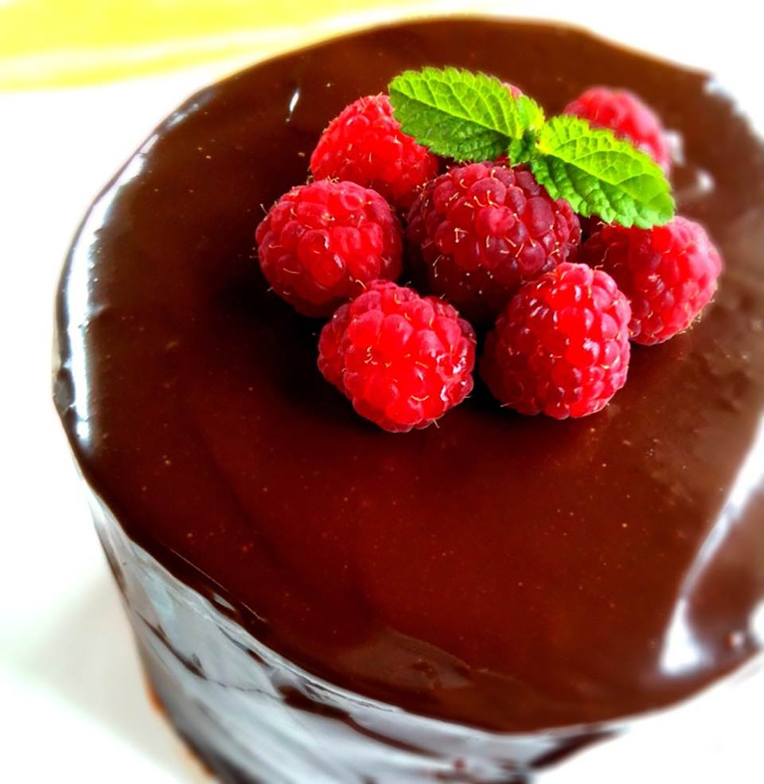
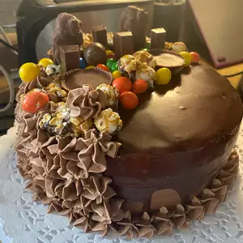

Place the chocolate into a medium bowl. Heat the cream in a small sauce pan over medium heat. Bring just to a boil, watching very carefully because if it boils for a few seconds, it will boil out of the pot. When the cream has come to a boil, pour over the chopped chocolate, and whisk until smooth. Stir in the rum if desired.
Allow the ganache to cool slightly before pouring over a cake. Start at the center of the cake and work outward. For a fluffy frosting or chocolate filling, allow it to cool until thick, then whip with a whisk until light and fluffy.